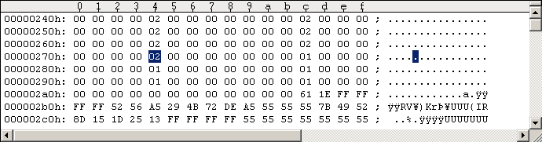
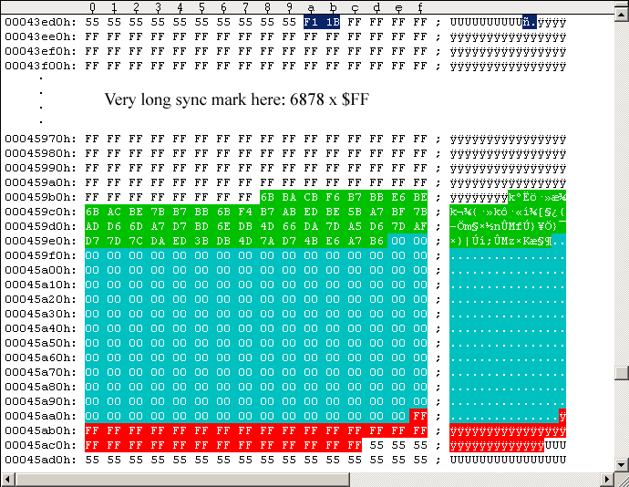

Remastering a 1541 disk from a G64 image
You will need a copy of nibtools for Windows and a 1541/1571 drive with a built in parallel port, and a drive speed control: The original G64 track images are longer than what can fit on to disk at normal 300rpm drive speed, thus getting automatically truncated. So we have to manually slow down the drive speed sufficiently to get all data onto the tracks. Before we can start remastering your G64 image needs two little "repairs": 1. Track 36 Track 36 must be remastered at bitrate 2, set this value in the G64 header (blue marked byte in Figure #1 below, offset 0x274). The default track length at this bitrate is 7143 bytes, but we make it 10 bytes longer here: =7153 bytes total track length (=$1BF1, see the 2 blue marked bytes in Figure #2 below). On original disks the Key Sector is embedded in a very long track filling sync mark. We let the track image start with 6876 $FF sync bytes (see Figure #2 below), followed by the Key Sector (247 bytes marked in green and cyan). The Key Sector consists of 54 leading Key Sector data bytes (marked green) and 193 trailing zeros (marked cyan). After the Key Sector, there are 30 $FF sync bytes (marked red) as a buffer for nibwrite's truncation: 1-27 bytes must get truncated (at least 1 byte, about 27 bytes at most). Watch nibwrite's console output. It may take a few attempts at remastering and/or playing with the drive speed until the truncation value is within the right bounds. In short: You have to use a hex-editor to edit your G64 file so that its appearance and lengths of the data structures are as follows (just move the structures around and overwrite the original data): - set track 36 bitrate to 2 in the G64 header. - set track 36 length number to 7153 bytes (=$1BF1). - the track 36 image must start with 6878 $FF sync bytes, followed by the Key Sector. - The Key Sector must consist of 54 leading data bytes, followed by 193 trailing zeros. - Finally the Key Sector must be followed by 30 $FF sync bytes as buffer for truncation. Note 1: RapidLok Key Sectors usually look different, you must use the Key Sector's 54 leading data bytes of your own disk image (and not the ones shown in Figure #2). Note 2: This RapidLok Key Sector might fail the integrity checks in rare cases, as it's not the perfect method of remastering it.
Figure #1: Set Track 36 bitrate to "2" in G64 header for remastering.

Figure #2: Track 36 prepared for remastering. 2. RapidLok track header on tracks 19-33 For remastering here the full RapidLok track header must be located at the start of the track images of tracks 19-33. See following Figure #3 for an example (taken from RapidLok6 handbook "Tracks 1-35 details" Figure #3). The track images must start with the 20 byte sync mark, followed by the $7B extra sector. The directly following sync mark preceding the $52 DOS reference sector must be 40 bytes long and the trailing sync mark after the $52 DOS reference sector must be 60 bytes long (on track 19 these sync lengths are explicitly checked and the $7B extra sector must not be longer than about 253 bytes). Use a hex-editor to organize and/or edit your G64 track images accordingly, but keep the structures in the original order.

Figure #3: A RapidLok track header (you can see the original track cut at offset 0x24FF6, byte value 0x73)
nibwrite -E17 -c -r -f -t game.g64 (at about 295 rpm)
nibwrite -S18 -E35 -c -r -f -t game.g64 (at about 299.7 rpm)
nibwrite -S36 -E36 -c -r -f game.g64 (at about 300 rpm)
You need to keep an eye on the nibwrite console output. You have to play
around with the drive speeds to avoid truncated bytes on tracks 1-35, but
try to avoid too many inserted off-bytes on these tracks as well.
After the Key Sector (track 36) are 30 $FF sync bytes (marked red) acting
as a buffer for nibwrite's truncation: 1-27 bytes must get truncated (at
least 1 byte, about 27 bytes at most). Watch nibwrite's console output
carefully. It may take a few attempts and/or playing around with the drive
speed until the truncation value is within the right bounds.
Explanation of the special nibwrite parameters:
-c: "disable automatic capacity adjustment".
We do this manually with our speed control.
-r: "disable automatic sync reduction".
Prevents shortening of the long sync marks.
-f: "disable automatic bad GCR detection".
Do not write zeros instead of bad GCR bytes (gaps);
do not change the original data from the G64 image.
-t: "Enable timer-based track alignment".
Tracks 19-29 must be track aligned.
If a remastered disk fails to work:
Make sure the disk is ok or try another 1541 disk - or disk drive.
Tracks 37-42 and/or half tracks are not used in RapidLok2, so there's no
problem with them.
There are 5 patches available you may apply to an already remastered disk to
find out what's wrong with that disk. You only have to edit and remaster
track 18 for these patches to apply: Use nibwrite -S18 -E18 patched.g64 to
remaster the patched track 18 at about 300rpm. Watch nibwrite's console log,
don't let it truncate track data.
First step: Apply the full patches ("type 5") to your G64 file and remaster
track 18. If this disk does not work the disk does not contain all the data
it should. In this case your drive speed was probably too high and some data
got truncated. Remaster tracks 1-35 again and make sure nothing gets truncated
on tracks 1-35.
We assume from now on that the remastered disk with full patches ("type 5")
applied works, so you have a problem with the protection. Read further to
find out what it is.
Now take your unmodified G64 file (without any patches), apply all patches
of types 1-4 at once to the G64 file and remaster track 18. The disk should
work now.
Now we choose and remove each individual patch to see if the disk still works:
Step 1:
Remove only the "type 2" patch ("disable whole track 36 handling and key
checks") from this G64 file (that means the type 1, 3 and 4 patches remain
applied) and remaster track 18:
If the disk does not work now there's a problem with track 36, as everything
else is still patched out: Make sure your G64 track 36 image looks as shown
and described above and remaster track 36 again until the disk works
(keeping type 1, 3 and 4 patches on track 18 applied).
Step 2:
We assume the disk works now (with the type 1, 3 and 4 patches applied),
which means that track 36 is ok. Now remove the "type 1" patch ("disable key
checks") in addition to the already removed "type 2" patch ("disable whole
track 36 handling and key checks") and remaster track 18 (only type 3 & 4
patches remain applied):
If the disk does not work now there's a problem with the $7B extra sectors
on tracks 29-33, see the above notes for fixing tracks 19-33 and remaster
tracks 19-33 again until the disk works (keeping the patches of types 3 and
4 on track 18 applied).
Note: Tracks 19-29 are track aligned - even if you want to remaster only a
single one of them you must always remaster all tracks 19-29 together in one
pass. This is why you need to remaster all tracks 19-33 here, although we
only want to fix the $7B extra sectors on tracks 29-33.
Step 3:
We assume the disk works now (with type 3 & 4 patches applied), which means
that tracks 29-33 and track 36 are ok. There's now a problem with either the
track 19 integrity check, or the track alignment on tracks 19-29, or both of
them. Now try (a) or (b):
(a) Remove the "type 4" (track alignment) patch (that means only the "type 3"
patch remains active). If the disk works now there's a problem with the
track 19 track header integrity check. See the above notes for fixing track
19 and remaster tracks 19-29 again without any patches (tracks 19-29 are
track aligned and must be remastered together in one pass).
If the disk still does not work you might have introduced a new problem on
track 29, or a new problem with the track alignment on tracks 19-29. Restart
with step 2 above to check this (make sure that track 29 is ok before going
on to step 3 again).
(b) Remove the "type 3" (track 19 track header integrity check) patch (that
means only the "type 4" track alignment patch remains active). If the disk
works now there's a problem with the track alignment on tracks 19-29.
Remaster tracks 19-29 again without any patches (tracks 19-29 are track
aligned and must be remastered together in one pass).
If the disk still does not work you might have introduced a new problem on
track 19, or a new problem on track 29. Restart with step 2 above to check
this (make sure that track 29 is ok before going on to step 3 again).
If the disk does not work after removing either the "type 4" patch (track
alignment) or the "type 3" patch (track 19 track header integrity check):
See the above notes for fixing track 19 and remaster tracks 19-29 again
(tracks 19-29 are track aligned and must be remastered together in one pass).
Then restart with step 2 above (make sure that track 29 is ok before going
on to step 3 again).
If the disk still does not work restart at the beginning.